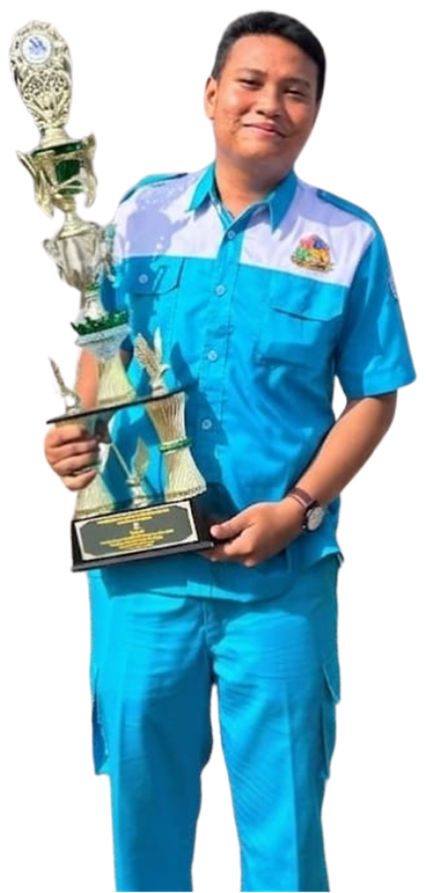

Juara I LKS Provinsi Sumatera UtaraDinas Pendidikan Provinsi Sumatera Utara27–29 April 2026Verifikasi keaslian ↗
IT Network System Administrator
Muhammad
Syahrin
Network Engineer/Sysadmin/ITNSA Expert

#1LKS Provinsi Sumut 2026
707Skor LKS Nasional
4Platform: Debian, Windows Server, Mikrotik, Cisco
Tentang saya
Halo, saya Muhammad Syahrin. Saya seorang IT Network System Administrator yang berfokus pada arsitektur jaringan multi-vendor, manajemen server, dan otomatisasi infrastruktur dengan Ansible.
Keahlian teknis saya dibuktikan melalui pencapaian Gold Medal di LKS Provinsi Sumatera Utara dan penghargaan Medallion for Excellence di LKS Nasional.
Sampai saat ini saya masih terus belajar untuk mengasah skill saya, dan saya terbuka untuk berdiskusi atau berkolaborasi soal jaringan.
Prestasi
Gold Medal LKS Tingkat Provinsi Sumatera Utara2026 · ITNSA
Kontingen Sumatera Utara di LKS Nasional2026 · ITNSA
Medallion for Excellence LKS Tingkat Nasional — Skor 7072026 · ITNSA
Finalis LKS Tingkat Nasional2026 · ITNSA
Peserta Olimpiade Jaringan MikroTik Nasional 20262026 · OJM
Keahlian
Debian
Windows Server
MikroTik
Cisco
Proyek
Sistem Absensi Siswa Full-Stack
Mengembangkan aplikasi absensi berbasis web (PHP, Apache, MariaDB) dan Android Native (Kotlin) yang terintegrasi dengan server Debian LDAP, lengkap dengan fitur cap foto (kamera) dan lokasi.
Otomatisasi Infrastruktur IT
Pembuatan playbook Ansible dan skrip YAML untuk deployment otomatis layanan Nginx, Apache2, dan DNS pada node Debian.
Implementasi Routing, Switching, & Load Balancing Lanjut
Konfigurasi VLAN, HSRP, EtherChannel, dan Inter-VLAN routing pada Cisco IOS; serta load balancing PCC, filter, dan queue bandwidth pada MikroTik RouterOS.
Sertifikat
Kompetisi 4
Medallion for Excellence LKS NasionalPusat Prestasi Nasional, Kemendikdasmen26 Juli – 1 Agustus 2026Verifikasi keaslian ↗
Finalis LKS NasionalPusat Prestasi Nasional, Kemendikdasmen26 Juli – 1 Agustus 2026Verifikasi keaslian ↗
Kursus & pelatihan 7
Cisco DasarID-NetworkersBerlaku sampai 7 Juni 2029No. IDN-1780825741-184-77831Buka halaman verifikasi ↗
Jaringan Komputer DasarID-NetworkersBerlaku sampai 7 Juni 2029No. IDN-1780826156-180-77831Buka halaman verifikasi ↗